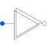

MultiDeltaDelta (polygon) connection of multi phase systems consisting of multiple base systems |

|
Information
This information is part of the Modelica Standard Library maintained by the Modelica Association.
Delta (polygon) connection of a multi phase circuit consisting of multiple base systems (see multi phase guidelines).
See also
Connectors (2)
| plug_p |
Type: PositivePlug |
|
|---|---|---|
| plug_n |
Type: NegativePlug |
Used in Components (3)
|
Modelica.Electrical.Machines.Utilities Terminal box Y/D-connection |
|
|
Modelica.Electrical.PowerConverters.ACDC.Control Control of 2*m pulse bridge rectifier |
|
|
Modelica.Electrical.PowerConverters.ACDC.Control Control of 2*m pulse center tap rectifier |